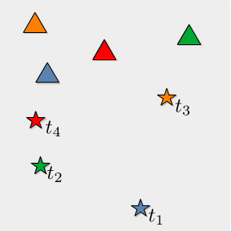

|  |  |
|
|
Private car very convenient. inefficient. |
Ride pooling (shared taxi) |
ingredients:
|

| \[ \begin{aligned} \langle\delta\rangle=\sum_{\delta}\delta\underbrace{\sum_{k}p(\delta|k)\underbrace{\sum_Mp(k|M)\underbrace{\sum_Tp(M|T)p(T)}_{p(M)}}_{p(k)}}_{p(\delta)} \end{aligned} \] |
- waiting times via volume growth on graphs (David)
- shareability as function of demand (Sebastian)
- user time constraints + pre-planning (Ruben)
- where to add line services? (Stephan)
- the bimodal system (Puneet, Helge)
- continue David's thesis (?)
- time series analysis (?)
- effect of rush hours (?)
Waiting times
.. show thesisTime series analysis
Given a simulated time series of an observable such as \(b(t)\), what are its..
- mean
- variance
- autocorrelation function?
How do they depend on system parameters?
Cross-correlations with other observables (detour, rejection rate, waiting times, ...)?
Rush hours
- implement time-inhomogeneous demand
- quantify robustness in peak-times
- identify strategies?